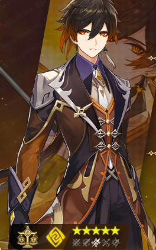

Birthday: 31 de Diciembre
Elemento: Geo
Arma: Lanza
Región: Liyue
Zhongli es un consultor de la Funeraria Wangsheng, conocido por su elegancia, sabiduría y modales impecables. Aunque parece un simple erudito, posee un vasto conocimiento sobre historia, rituales y contratos. Su comportamiento tranquilo y su forma de hablar revelan una profunda conexión con la antigua Liyue.
「Los contratos son la base de todas las relaciones humanas. Cada acuerdo, cada promesa, cada palabra dada… todo tiene un precio y un valor que debe respetarse. Así ha sido siempre, y así debe continuar siendo.」 — Reflexión de Zhongli mientras contempla la ciudad de Liyue.